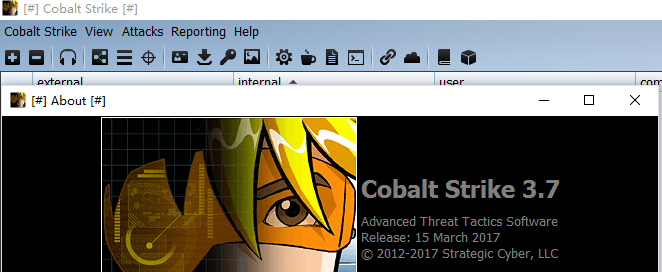
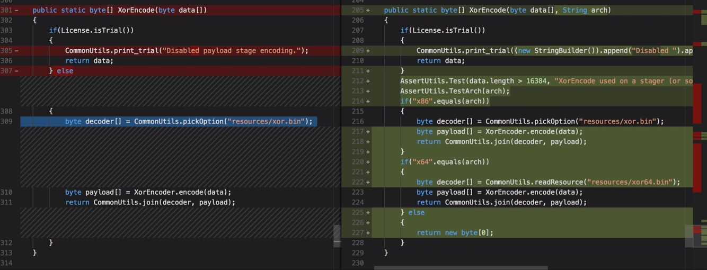

cobalt strike 3.7 破解
- 作者:c4bbage
- 时间:2017.7.31
- 链接:http://dobest1.com/cobalt-strike-cracked/
简介
cobalt strike 相对于一般开源远控是一个非常好用的red Team 工具，谁用谁知道。相对专业的就不提了。
理论
cobalt strike 校验函数为common.License 类中，其中大部分破解还是用修改日期的傻瓜方式。我来介绍另一个傻瓜方式 ， 我们直接修改 common.License.isTrial() 函数的返回结果就好，同时也可以使用多正版功能。
// jd-gui 反编译的源码
package common;
public class License
{
public static void checkLicenseGUI() {
// 代码省略
// 此函数是GUI Client模式下是否许可检查
// 需要清空此函数
}
public static boolean isTrial()
{
return true;
// 必须修改函数
// return false; //edit here
}
public static void checkLicenseConsole() {
// 代码省略
// 此函数是Console teamserver模式下是否许可检查
// 需要清空此函数
}
}
操作
- 工具: jad
cobaltstrike.jar 解压，使用jad打开common/License.class
D:\cobaltstrike123\common>jad License.class
Parsing License.class... Generating License.jad
# 修改文件
D:\cobaltstrike123\common>javac.exe" -classpath ../ License.java
# 重新生成的License.class 替换掉 jar包中class

运行
cobalt strike3.7 在运行的时候要使用jdk1.8u121，如果最新版本java 运行 cobalt strike 会报错 The Parallel GC can not be combined with -XX:ParallelGCThreads=0 ，新版本java ，cobalt strike3.7暂不支持.
cobalt strike3.8 修复上述错误.
cobalt strike3.8 3.7 缺少xor.bin xor64.bin文件(左3.6，右3.8).
